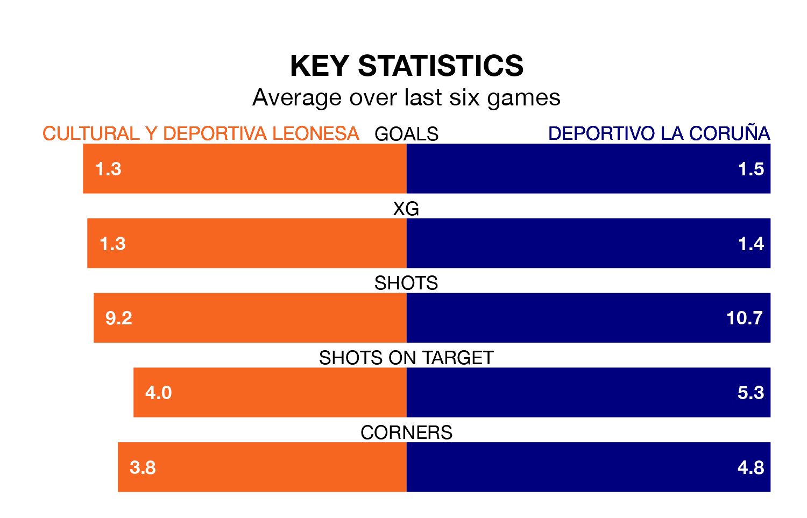

Two of Primera Division RFEF Group 1's meanest defences go head-to-head at the Estadio Municipal Reino de León on Sunday, when Cultural y Deportiva Leonesa host Deportivo La Coruña.
No teams have conceded fewer goals than Cultural y Deportiva Leonesa to date: the home side have let in just 11 goals in 18 games.
Deportivo La Coruña have conceded 15 goals in 18 games, giving them the joint-fourth tightest back line so far this season.
Key to Cultural y Deportiva Leonesa's home form has been Miguel Bañuz Antón, who has allowed no goals past him per 90 minutes, the same rate as Germán Parreño Boix in the opposite net.
Cultural y Deportiva Leonesa are third in the table after 18 games, of which they have won 10 and drawn four, earning 34 points.
Deportivo La Coruña are three places behind the home team in sixth, with seven wins and eight draws putting them on 29 points.
The visitors' Lucas Perez is the league's most creative player, racking up five assists in one appearance so far this season.
For Cultural y Deportiva Leonesa, Joseba Muguruza Bengoa, Martín Solar Ruiz and Rodrigo Escudero Vega have set up the most goals, having laid on one assist apiece to date.
Cultural y Deportiva Leonesa are in mixed form in Primera Division RFEF Group 1, with three wins and a draw from their last six games.
With three wins and three draws over that period, Deportivo La Coruña's form is slightly better – they have taken 12 points from 18, compared to the hosts' 10.
Cultural y Deportiva Leonesa's last match was on January 3, a 0-0 draw against CD Teruel.
Deportivo La Coruña beat Real Sociedad B 2-1 last time out, on January 4, with Pérez Martínez on the scoresheet.
Updated: 11:31, 09/01/24